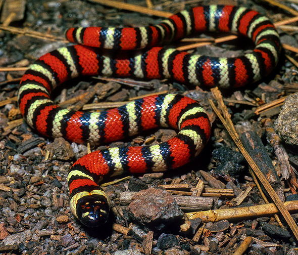
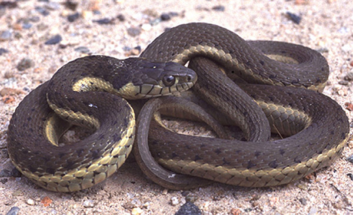
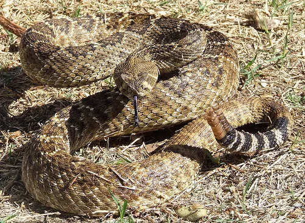

Red touches yellow, kills a fellow.
Red touches black, venom it lacks.
While this snake may look dangerous, it is actually quite docile to humans.
The same can't be said for smaller animals,
they are constrictors that have been known to hunt other snakes, including Rattlesnakes!

These mildly venomous snakes are generally harmless to humans.
They can be more defensive when threatened, but their venom is not powerful enough to harm humans.
Garters are semi-aquatic and like to hang out near streams and creeks in the foothills.

These snakes typically avoid conflict, but if they are threatened,
they will stand their ground. They are highly venemous and you should keep your distance if you encounter one.
While Diamondbacks are considered more aggressive than other rattlers,
most bites occur when a rattlesnake is accidentally stepped on or when they feel cornered and threatened.